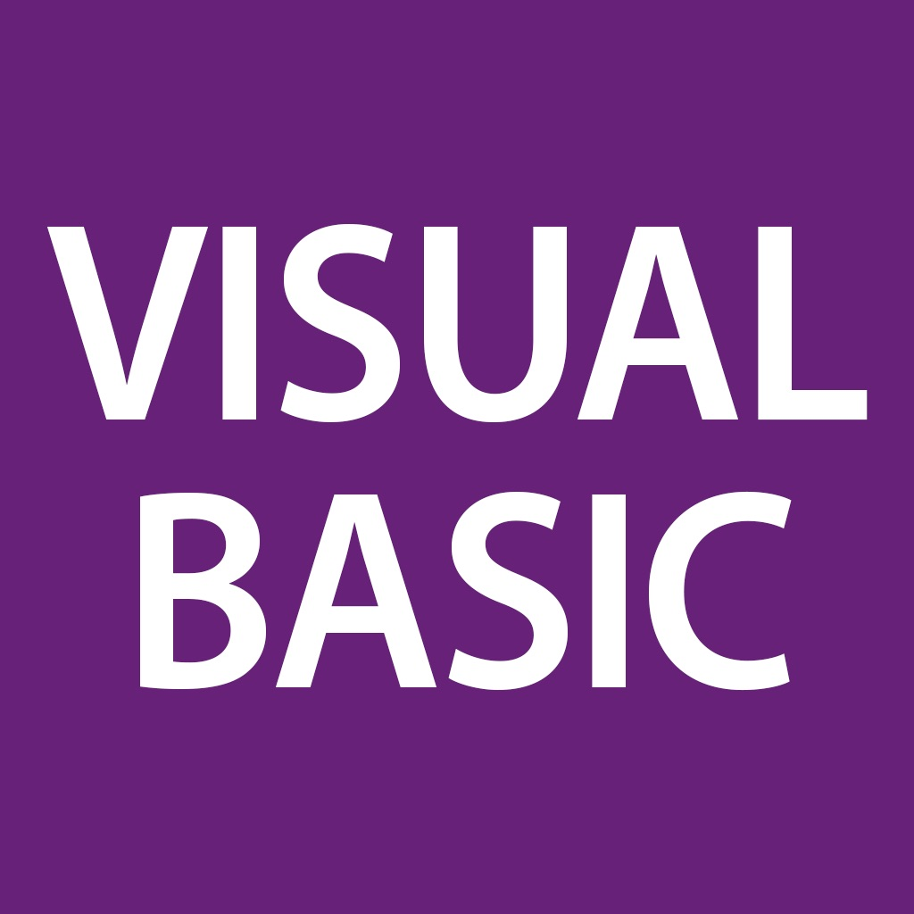

Несмотря на ряд сильных сторон, о недостатках рассматриваемого ЯП тоже забывать не нужно. К ним относят:
Несмотря на ряд сильных сторон, о недостатках рассматриваемого ЯП тоже забывать не нужно. К ним относят:

Язык BASIC был разработан в 1964 году. Он создавался для выполнения учебных задач, при которых обучающиеся могли бы использовать простые алгоритмы для освоения навыков программирования. Данный язык вывел образование на новый уровень, а программисты начали соревноваться между собой, создавая все новые и новые диалекты.
В число людей, начавших свою профессиональную карьеру с использования BASIC, входил Билл Гейтс, который в возрасте 13 лет написал на нем свою первую программу. В 20 лет он вместе с Полом Алленом получал свои дивиденды от реализации версии Altair BASIC.
В 80-х годах популярность BASIC стала постепенно снижаться. Разрабатываемые в то время языки уже не имели столь сложного синтаксиса, а их спектр возможностей становился все шире. Лишь Microsoft продолжал выпускать разновидности BASIC, сначала создав QBasic, а затем и Visual Basic.
На первых порах версии Microsoft Visual Basic не были столь популярны. Дело в том, что они практически не отличались от QBasic. Исключениями являлись разве что графический интерфейс и подсветка синтаксиса. Но Microsoft внесли существенные коррективы в версию 3.0.
Комплектация Professional позволяла разработчикам взаимодействовать с базой данных Access, а благодаря графическим возможностям с языком смогли работать даже те люди, которые не имели навыков программирования. Плюс ко всему, увеличилась скорость работы, а установка ПО стала значительно проще.
В 1995 году появилась Windows 95, что позволило Visual Basic 4.0. выйти в лидеры. Был создан полноценный компилятор, появилась возможность разрабатывать 16 и 32-ядерные приложения, и повысилось быстродействие.
Последняя версия традиционного Visual Basic вышла в свет в 1998 году. С этого момента Microsoft поменял стратегию, обеспечив два вектора развития языка: VB на платформе .NET и адаптированные версии для решения локальных задач (VBA, VBScript, eVB).
Можно выделить несколько основных моментов, отличающих Visual Basic от других ОПП языков с C-подобным синтаксисом.
А еще Visual Basic грамотно использует виртуальную память и относительно прост в освоении. С ним может справиться даже новичок.
Несмотря на ряд сильных сторон, о недостатках рассматриваемого ЯП тоже забывать не нужно. К ним относят:
Также стоит обратить внимание на то, что программа Visual Basic требует предварительной установки библиотеки msvbmXX.dll.
Исходя из всего сказанного, следует вывод о том, что рассмотренный язык программирования – это простой, хоть и не самый популярный ЯП от Microsoft. Он в основном изучается новичками на первых порах погружения в разработку.
Среди современных популярных ЯП встречается редко, но все равно входит в ТОП-10 programming languages. Это – выход для тех, кто хочет начать плавное погружение в основы объектно-ориентированного программирования, а также привыкших использовать Windows на компьютере.
Критика
Соответствующий язык программирования часто подвергается критике. Из-за этого он в последние годы сдает позиции. Чаще всего осуждению подвергаются следующие моменты:
Все осуждаемые моменты вытекают из главного плюса ЯП – его простота при создании графических интерфейсов. Программисты часто применяют соответствующий «синтаксис» для interfaces.
Рассматриваемый язык разработки – не самый популярный, но все еще использующийся программистами. Он необходим для того, чтобы создавать специализированный контент под Windows.
Сферы применения:
А вот для работы с ИИ и сложными структурами это далеко не самый подходящий вариант. Лучше всего его задействовать тем, кто готов всецело посвятить себя Windows и иным продуктам от «Майкрософт».
Простейший пример программы для VB.NET 9 выглядит так
|
Module Module1
Sub Main() Console.WriteLine ("Привет, Мир!") End Sub End Module |
|
Sub Hello() MsgBox("Hello, World!") End Sub Hello() |
|
Sub Factorial() Dim x As Long Dim res As String x = 1 For i = 0 To 10 res = res & CStr(i) & "! = " & CStr(x) & Chr(10) x = x * (i + 1) Next i MsgBox (res) End Sub |
| № | Тип данных | Диапазон |
|---|---|---|
| 1 | Byte (целый без знака) | От 0 до 255 |
| 2 | Boolean(логический) | True или False |
| 3 | Integer(целый) | от - 32768 до 32767 |
| 4 | Long(длинный целый) | от - 2147483648 до 2147483647 |
| 5 | Single(число с плавающей запятой обычной точности) | От - 3.402823Е +38 до - 1.401298Е-48 и от 1.401298Е-45 до 3.402823Е+38 |
| 6 | Double (число с плавающей запятой двойной точности) | От -1,79769313486232Е308 до-4,94065645841247Е-324 для отрицательных значений; от 4,94065645841247Е-324 до1,79769313486232Е308 для положительных значений |
| 7 | Date(дата и время) | от 01. 01. 100 до 31. 12.9999 |
| 8 | String(строка) | от 0 до 65535 символов |
| 9 | Variant | Любой встроенный тип данных |
Использованные теги:
Использованные css-свойства: